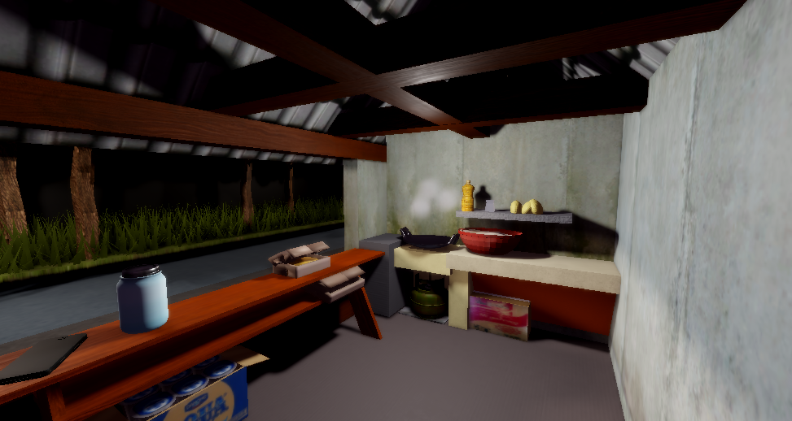

PROJECT GAME ROBLOX HORROR

Roblox Horror Game
Game ini dikerjakan selama 3 bulan dengan tujuan belajar membuat game dan mempelajari software yang digunakan dalam proses pembuatan game.
Software yang digunakan:
- Roblox Studio
- Blender
- Picarts

Game Simulator Tycoon
ini adalah projeck kedua saya dalam tahun 2026 yang dibuat sekitar 2 bulan di game ini banyak sekali mekanik yang saya tambahkan dari gacha, sistem health bar dll, saya juga belajar cara membuat sistem yang rapih minim bug dan siap dimainkan, semua asset dibuat sendiri kecuali asset hewannya karena itu ada di toolbox gratis
Software yang digunakan:
- Roblox Studio
- Blender
- Picarts
- Pixelab